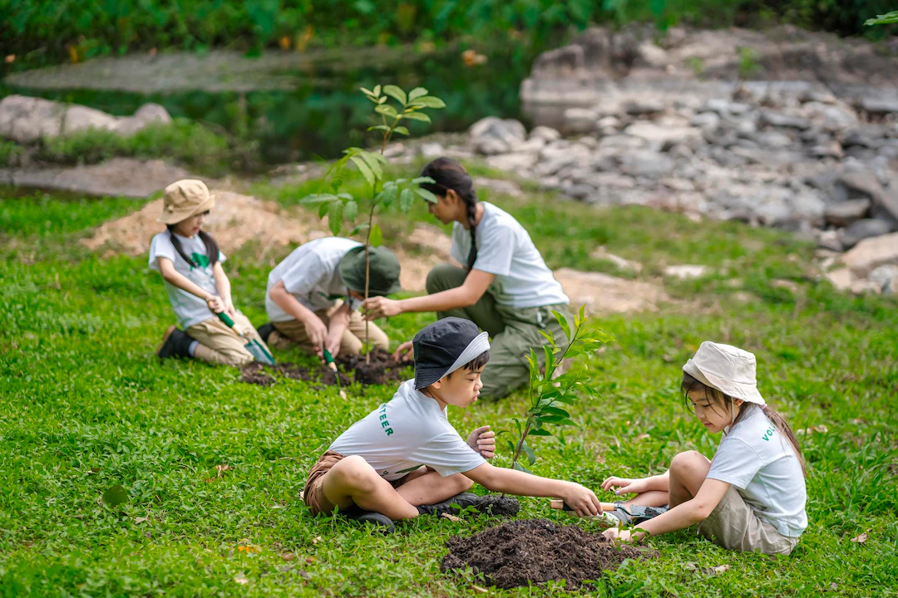

Nuestra Misión Ambiental
Protegiendo la vida salvaje, cuidando nuestro hogar
En Zoológico Vida Salvaje, creemos firmemente que el futuro de nuestro planeta depende de las acciones que tomamos hoy. Por ello, llevamos adelante proyectos de conservación y educación ambiental con un enfoque comunitario.
- Reforestación: colaboramos en campañas de siembra de árboles nativos.
- Rescate animal: rehabilitamos animales heridos y los reinsertamos en su hábitat.
- Educación: promovemos talleres ecológicos en escuelas y comunidades.
- Uso responsable: el zoológico usa energía solar, reciclaje y sistemas de ahorro de agua.
Nuestro compromiso es crear conciencia sobre la importancia de conservar cada especie y cada rincón natural.
